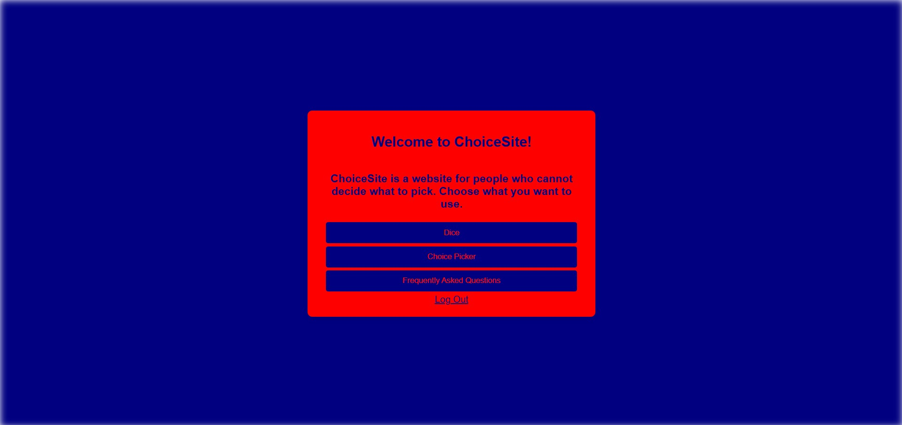
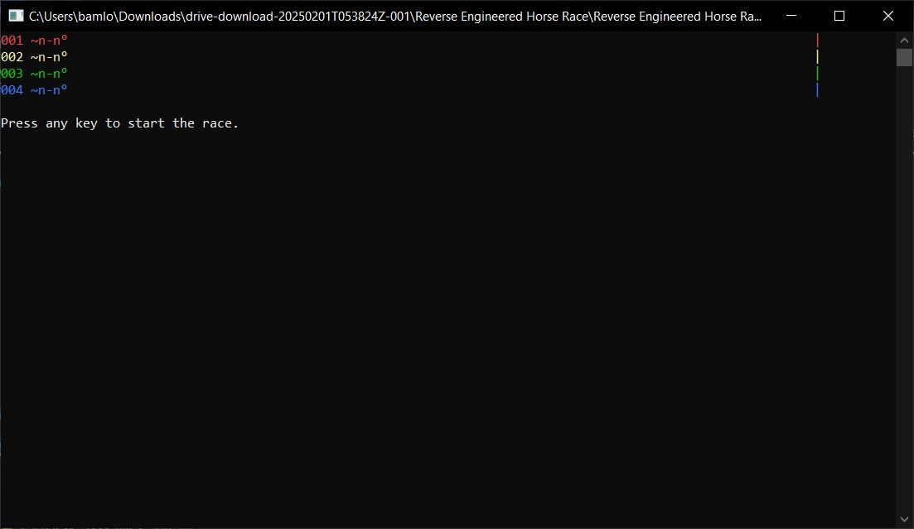
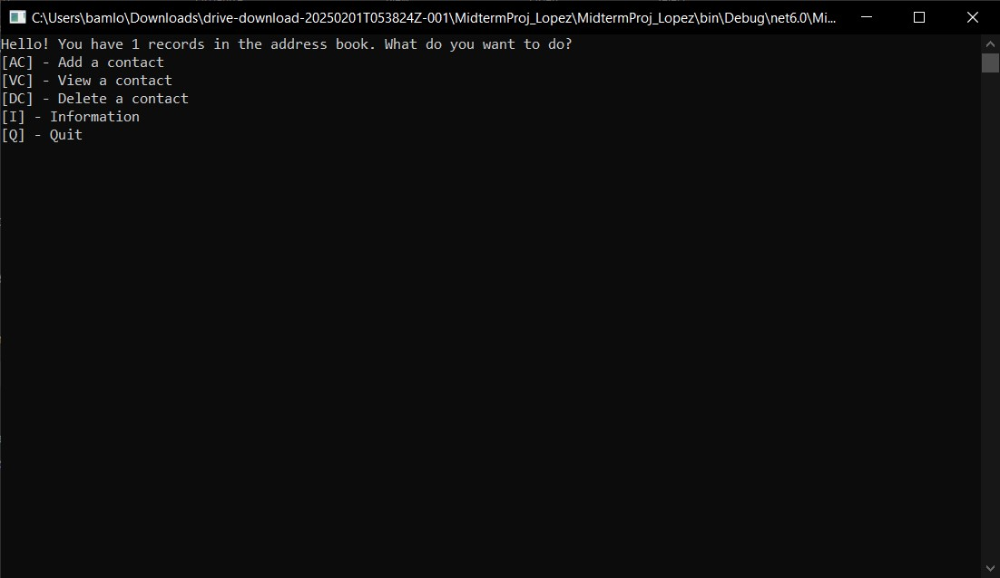
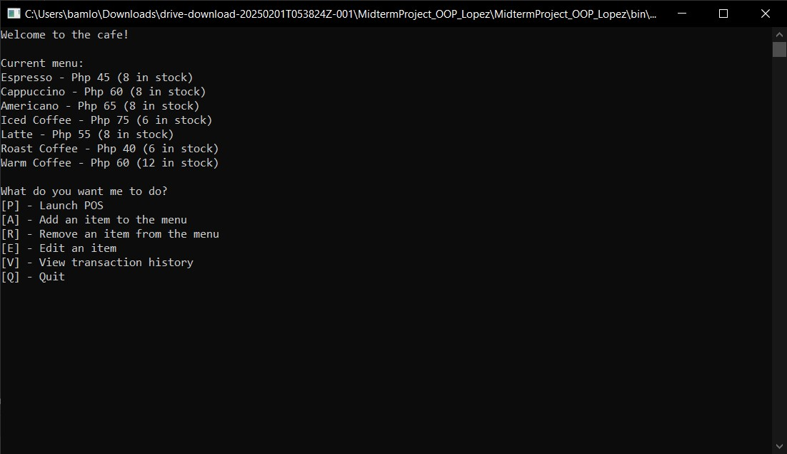

Best Works
On this page, you will see my best works in SISC throughout my three-year stay. Fair warning that I will just be linking the GitHub links here due to some of these projects being very long. I will be putting descriptions on why do I consider it as part of my best works.
Prelim Project - Web Systems (ChoiceSite)
This is my latest work that I did individually as a student. The twist here is that our website's two color palettes are determined by Pokémon, and that I got Swellow which meant that I had to use its colors (both regular and shiny, which was a total of seven colors which were a dark shade of blue, red, green, gold, white, dark gray, and yellow). This website is meant for people who cannot decide. It has a dice, an FAQ, and a choice picker which functions similarly to the Magic 8-Ball but has more freedom on what choices to pick from.
Reverse Engineered Horse Race
This is one of my outputs in Object-Oriented Programming where we were tasked to reverse-engineer or code the horse race from an existing executable file. The horses are represented by five characters to try to make it as close to the actual real-life horses, and that they race to the end of the line.
Midterm Project - Programming 2 and Data Structures and Algorithms (Address Book in C# Console)
This is one of my best projects where this was what I presented in two subjects as a midterm project. This contains 400 lines where they cover the functions of adding, sorting, viewing, and deleting contacts. It also has the ability to add a custom category or field.
Midterm Project - Object-Oriented Programming (Cafe Point-of-Sale System in C# Console)
This is another one of my best projects where this was what I presented in OOP for the midterms. This is a full Cafe POS where it has the ability to modify the menu's contents and save changes to the CSV file of the menu. Aside from the menu changing, it has the ability to keep track of transaction history and also to print out receipts in console format aside from the main job of being a POS.